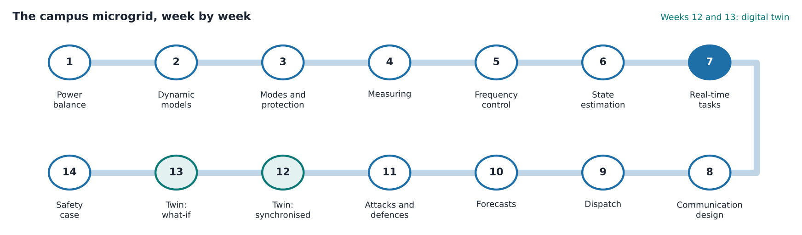
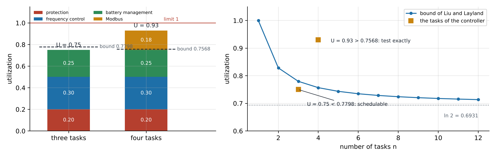
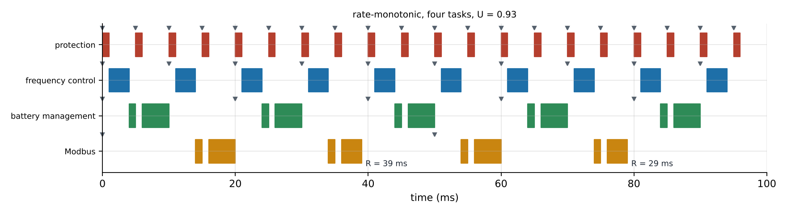
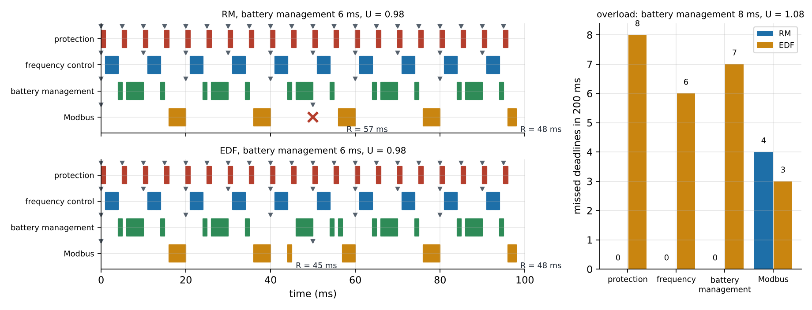
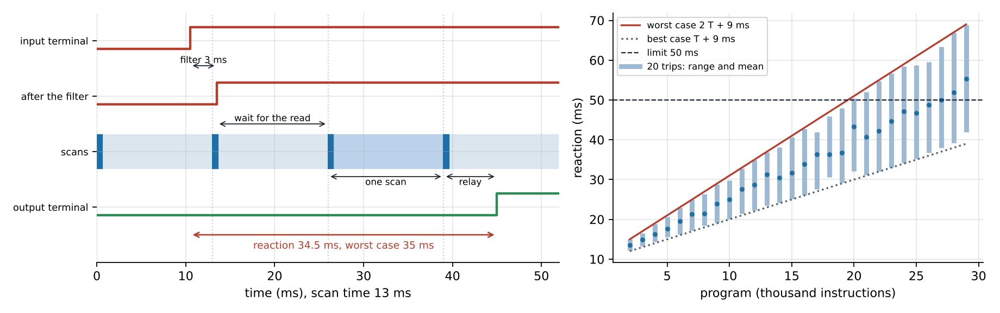
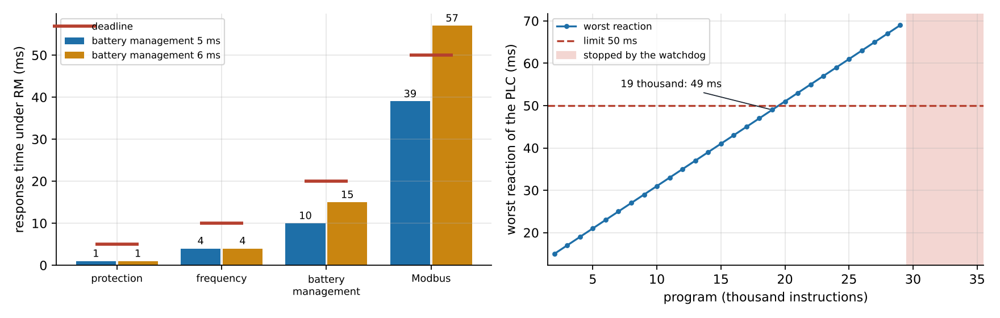

Overview
Weeks 3, 5 and 6 designed the protection, the frequency control and the estimators of the campus. In the battery container, all of them run as tasks on one processor of an embedded controller. Each task must finish before its next period begins. This week checks whether they do, with rate-monotonic and earliest-deadline-first scheduling [1]. It then follows the programmable logic controller (PLC) of the main switchboard through its scan cycle [2].
flowchart LR A["Tasks on one processor"] --> B["Rate-monotonic scheduling"] B --> C["Earliest deadline first"] C --> D["The PLC scan cycle"] D --> S["The campus microgrid, stage 7"] S --> FT["In the field: A program change"] FT --> H["Learning to schedule"]
Every method on this page is also written as Python code in the Colab notebook of the week. Its code is divided into numbered sections. Each orange box on this page names the section whose code carries out what the text above the box explains. The box says what to run and what to look at in that section, and its button opens the Colab notebook at that place. The virtual laboratories, the practice parts and the self-assessment of the week are in the interactive lab. Each blue box opens one part of the interactive lab. The part ends with a link back to its box on this page, and the Colab notebook is always opened from the orange boxes here.
Python step 7: Tasks and time
Python code in the Colab notebook, right after Section 0 (setup). Open the Colab notebook and run this step cell by cell: It consists of short pieces of Python code with their explanations, a quick check and three exercises. Topics: Classes and objects · Sorting by priority · A scheduler loop.
The step introduces classes in Python [3]. It writes a task as a class with a method, sorts tasks by their period and ends with a scheduler loop that runs one millisecond at a time. Students who have never programmed start with the start-here notebook of the course.
Weeks 1 to 6 built the balance, the dynamics, the modes, the measurements, the frequency control and the estimators of the campus. Each of them is a computation that has to run on a real processor in time.
This week puts these computations on the controller of the battery container and on the PLC of the main switchboard and checks their timing.

Tasks on one processor
A real-time system must deliver its results on time, not only correctly [4]. The controller of the battery container runs four periodic tasks. Each task \(\tau_i\) is released every period \(T_i\) and needs at most its worst-case execution time (WCET) \(C_i\) on the processor. It must finish before its next release, so its deadline is \(D_i = T_i\).
| Task | Period T (ms) | Execution time C (ms) | C/T | From |
|---|---|---|---|---|
| Protection logic | 5 | 1 | 0.20 | Week 3 |
| Frequency control | 10 | 3 | 0.30 | Week 5 |
| Battery management with the Kalman filter | 20 | 5 | 0.25 | Week 6 |
| Modbus polling of the container | 50 | 9 | 0.18 | Week 8 |
The share of the processor that the tasks need is their utilization, and the pattern of their releases repeats after the hyperperiod \(H\) [1]:
With \(U > 1\) the processor cannot keep up with the work. The hyperperiod is the least common multiple of the periods, so one hyperperiod contains every situation that the schedule will ever meet.
→ This formula with numbers, step by step: Lab Part B, calculator, step 1.
A worked example. The first three tasks need \(1/5 \)\({}+ 3/10 \)\({}+ 5/20 \)\({}= 0.20 \)\({}+ 0.30 \)\({}+ 0.25 \)\({}= 0.75\) of the processor. The Modbus task adds \(9/50 = 0.18\), so the four tasks need \(U = 0.93\). Their hyperperiod is \(\mathrm{lcm}(5, 10, 20, 50) = 100\) ms, in which the processor stays idle for 7 ms.

Check your understanding. The four tasks need \(U = 0.93\). What does this value guarantee?
Python code in the Colab notebook, Section 1. Open Section 1 of the Colab notebook and run it. The class Task of the Python step holds each task, and the function utilization adds their shares of the processor. The code prints the table of the tasks, the utilization with three and with four tasks and the hyperperiod.
- The Kalman filter took 4.2 ms in a thousand measurements in the laboratory. Which value of \(C\) would you enter, and why?
- Which task of the controller needs the shortest period, and what decides it?
Rate-monotonic scheduling
A rate-monotonic (RM) scheduler gives each task a fixed priority: The shorter the period, the higher the priority. At every moment the processor runs the ready job with the highest priority and preempts a running job of lower priority. Liu and Layland proved that no other order of fixed priorities does better. RM meets every deadline if [1]:
The bound is sufficient, not necessary. The first three tasks pass it with 0.75. The four tasks exceed it with 0.93, and only an exact test can decide. The response-time analysis of Joseph and Pandya finds the worst-case response time \(R_i\) of each task [5, 6]. It assumes that all tasks are released together, which causes the most interference:
Here \(hp(i)\) is the set of the tasks with a higher priority than \(\tau_i\). The ceiling \(\lceil R_i/T_j \rceil\) counts the jobs of \(\tau_j\) that are released while \(\tau_i\) waits. The equation is iterated until \(R_i\) stops changing, and the task meets all deadlines if \(R_i \le D_i\).
→ These formulas with numbers, step by step: Lab Part B, calculator, steps 2 and 3.
A worked example. For the battery management task, \(R^{(0)} = 5 + 1 + 3 = 9\) ms. Then \(R \)\({}= 5 \)\({}+ \lceil 9/5 \rceil \cdot 1 \)\({}+ \lceil 9/10 \rceil \cdot 3 \)\({}= 5 \)\({}+ 2 \)\({}+ 3 \)\({}= 10\) ms, and the next step gives 10 ms again, well within 20 ms. For the Modbus task, the iteration runs 18, 24, 33, 38 and 39 ms, where it stops changing. Its response time of 39 ms stays below its deadline of 50 ms. So all four tasks meet their deadlines, although \(U\) exceeds the bound.

Scene: One processor, four tasks. The controller of the battery container runs four tasks on one processor. Each lane of the table is one task over the first 60 ms, with its releases as cones and its jobs as coloured bricks. The flag marks the deadline of the first Modbus job. The five buttons follow the schedule from the first release to earliest deadline first.
Check your understanding. Under RM, which task of the controller suffers most from the others?
Python code in the Colab notebook, Section 2. Open Section 2 of the Colab notebook and run it. The function response_times carries out the iteration of this section, and simulate runs the scheduler one millisecond at a time. The code prints the steps of the iteration for each task and confirms the response times with the simulated schedule, which it draws.
- Why would an engineer accept a bound that leaves about a quarter of the processor unused?
- The frequency control could get a higher priority than the protection logic. Would you allow it?
Earliest deadline first
An earliest-deadline-first (EDF) scheduler gives the processor to the job whose absolute deadline comes first, so the priorities change from job to job. For periodic tasks with deadlines equal to their periods, Liu and Layland proved that EDF meets every deadline exactly when [1]:
EDF can therefore use the whole processor, while RM guarantees less. The difference shows when the Kalman filter with the offset of Week 6 needs 6 ms instead of 5 ms. The utilization rises to 0.98, still below 1.
→ These formulas with numbers, step by step: Lab Part B, calculator, steps 3 and 4.
A worked example. With \(C_3 = 6\) ms for battery management, the iteration for the Modbus task runs 19, 25, 35, 40, 41 and then 51 ms, beyond its deadline of 50 ms. It settles at 57 ms. The simulated schedule confirms that the first job of the Modbus task ends at 57 ms under RM. EDF runs the same tasks without a single missed deadline, because \(U = 0.98 \le 1\), and its longest response of the Modbus task is 48 ms.
The price of EDF shows in an overload. With 8 ms for the battery management task, \(U = 1.08\). RM keeps its order: The three tasks of higher priority meet every deadline, and only the Modbus task misses. Under EDF, late jobs keep their early deadlines and push all the others back. In 200 ms the four tasks miss 24 deadlines, and even the protection logic misses 8 of its 40.

Check your understanding. Why can EDF fail badly in an overload?
Interactive lab, Part A. The controller bench in 3D: The embedded controller of the battery container, a logic analyzer with one probe per task and a screen with the four traces. Choose the scheduler, the execution time of the battery management task and the Modbus task, and record 200 ms of the schedule. The results can be copied into the Colab notebook.
Interactive lab, Part B. The calculator of the week computes the formulas of this page step by step. It covers the utilization, the response times of battery management and Modbus under RM, the test of EDF and the worst reaction of the PLC for execution times and a program of your choice.
Python code in the Colab notebook, Section 3. Open Section 3 of the Colab notebook and run it. The function simulate with policy="EDF" carries out the scheduler of this section. The code compares RM and EDF with 6 and with 8 ms for the battery management task and draws both schedules. Paste the results of Part A into MY_RUNS, and the code runs each of your cases again.
- Most commercial real-time operating systems offer fixed priorities rather than EDF. Why might that be?
- How would you protect the protection logic in an overload under EDF?
The PLC scan cycle
The breakers of the main switchboard are controlled by a PLC. A PLC runs its program in an endless scan cycle [2]. At the boundary of two scans, it writes the output image to its outputs and reads all inputs into the input image. It then executes the program on that image and handles communication and diagnostics. Its programs are written in the languages of the standard 61131-3 of the International Electrotechnical Commission (IEC), such as ladder diagram, function block diagram and structured text [7].
When the grid breaker opens, the PLC must open the car park feeder within 50 ms. This is the first step of the load shedding of Week 3, so that the battery can carry the critical buildings. A program of \(k\) thousand instructions has the scan time \(T_{scan} = k + 1\) ms. Each instruction takes 1 µs, and the images and the communication take 1 ms. A change at the input terminal passes an input filter of \(t_{in} = 3\) ms and waits for the next read. The end of that scan writes the output, and the relay adds \(t_{out} = 6\) ms:
The worst case occurs when the filtered input arrives just after a read. It then waits almost one scan for the next read and one more scan for the output. A watchdog timer stops the PLC, with its outputs switched off, if one scan takes longer than 30 ms.
→ This formula with numbers, step by step: Lab Part B, calculator, step 5.
A worked example. The program of the switchboard has 12 thousand instructions, so \(T_{scan} = 13\) ms. A trip of the grid breaker reaches the output terminal between \(13 + 3 + 6 = 22\) ms and \(2 \times 13 + 9 = 35\) ms later, within 50 ms. With 19 thousand instructions the worst case is \(2 \times 20 + 9 = 49\) ms. With 20 thousand it is 51 ms, and the requirement fails.
Animation. One trip of the grid breaker through the scan cycle of the PLC. The ring shows one scan, with the images of the outputs and inputs, the program and the communication, and the red dot marks the moment of the trip. The timeline follows the trip from the input terminal through the filter and the scans to the output terminal. Move the trip through the scan and watch the reaction change between its best and its worst case.

Check your understanding. The scan time doubles. What happens to the worst-case reaction?
Interactive lab, Part C. The PLC cabinet of the main switchboard in 3D. It holds the power supply, the central processing unit (CPU) of the PLC, the input and output modules, the contactor of the car park feeder and a trip recorder. Set the size of the program, trip the grid breaker 20 times and compare the reactions with the worst case. The results can be copied into the Colab notebook.
Python code in the Colab notebook, Section 4. Open Section 4 of the Colab notebook and run it. The function reactions follows 20 trips through the scan cycle of this section, and worst_case gives the bound. The code compares the reactions with the bound for several programs. Paste the results of Part C into MY_PLC, and the code repeats each of your runs.
- Some PLCs start a task as soon as an input changes, instead of waiting for the next scan. What would that change for the load shedding?
- Why should the outputs of a PLC switch off when its watchdog stops it, and when could that be dangerous?
Development templates of the week
The folder templates/ of the repository collects small working programs that carry out the methods of the course. Week 7 adds two of them, each with a description, its inputs and outputs and an example run.
| Template | What it does |
|---|---|
rt_scheduler.py | Periodic tasks as a class, the utilization tests of RM and EDF, the response-time analysis and a simulator of both schedulers; the example is the controller of the battery container |
plc_scan.py | The scan cycle of a PLC with an input filter, an output delay and a watchdog; it computes the best and the worst reaction and simulates trips at random moments |
The engineering side: Timing that holds
Every analysis of this week rests on the worst-case execution times \(C_i\). Measuring a task a thousand times gives a likely value, not a guaranteed one, because caches and pipelines make execution times vary. Static analysis tools bound the worst case from the machine code instead [8].
| Check | What it reveals |
|---|---|
| Measured execution times close to the assumed C | A margin that has been used up |
| Response times close to the deadlines | A system that one more task will break |
| A task of high priority waiting for a lock that a task of low priority holds | Priority inversion |
| Variation of the time between sampling and actuation | Jitter that degrades a control loop |
| Scans that approach the watchdog time | A PLC that will stop under a rare load |
Tasks that share data need locks. A task of high priority can then wait for a task of low priority that holds the lock, while tasks of medium priority run. This priority inversion can last without bound. Priority inheritance lends the high priority to the holder of the lock for that time and bounds the delay [9]. For control loops, the delay between sampling and actuation and its variation, the jitter, matter as much as the deadline [10].
A cook prepares the dishes of several tables, each ordered at its own time and due by a deadline. Quick dishes come first, and the cook interrupts a slow roast for them. When the kitchen is overloaded, one late table can delay all the others. This is a real-time schedule with preemption.
- How would you measure the response time of the frequency control on the real controller?
- Which margin between the utilization and its bound would you require before adding a task?
The campus microgrid, stage 7: Real-time tasks of the microgrid controller
Stage 7 checks the timing of the computations of the campus. The controller of the battery container runs four tasks on one processor, and the PLC of the main switchboard sheds the car park after a trip of the grid breaker.
| Question | Result | Model |
|---|---|---|
| Utilization of the four tasks | 0.93, above the bound of 0.7568 for four tasks | Utilization |
| Response times under RM | 1, 4, 10 and 39 ms, all within the deadlines | Response-time analysis |
| Battery management with 6 ms | U = 0.98: Modbus misses under RM (57 ms); EDF meets every deadline | RM and EDF |
| Overload with 8 ms | U = 1.08: RM misses only Modbus (4 of 4); EDF misses 24 deadlines of all four tasks | Simulation |
| PLC with 19 thousand instructions | Scan 20 ms, worst reaction 49 ms within 50 ms | Scan cycle |
| Largest program within 50 ms | 19 thousand instructions | Scan cycle |
| Watchdog of 30 ms | Stops the PLC from 30 thousand instructions on | Watchdog |
The frequency control answers within 4 ms, only 0.37 percent of the delay margin of 1.072 s that Week 8 finds for the loop over the network. Week 8 carries the messages of these tasks over the networks of the campus.

Check your understanding. What does RM offer in an overload that EDF does not?
Interactive lab, Part D. Stage 7 by hand: The utilization and the response time of the Modbus task when it needs only 6 ms. It ends with the worst reaction of a PLC with a scan time of 12 ms.
Python code in the Colab notebook, Section 5. Open Section 5 of the Colab notebook and run it. The code collects the results of stage 7 in the dictionary STAGE7. A figure draws the response times against the deadlines and the worst reaction of the PLC against the size of its program.
In the field: Changing the program of the PLC
The operator of the campus asks for one change. After an outage, the car park feeder shall close only 10 s after the grid returns. The returning grid then does not meet all chargers at once. In structured text, the on-delay timer TON of IEC 61131-3 does this [7]. Its output Q becomes TRUE when its input IN has been TRUE for the preset time PT. It becomes FALSE as soon as IN falls, and the elapsed time ET counts in between. A time is written as T#10S for 10 s or T#10MS for 10 ms.
On site, the program travels from a laptop into the PLC. Many PLCs accept a full download only in their stop mode, and in that mode all outputs are off, so the change waits for a quiet hour. A test then forces the input I0. The force overrides the value of the input in the input image, as if the breaker had opened, without touching the breaker. Forces are removed at the end, because a forgotten force hides the real state of the plant [2].
Interactive lab, Part E. The field task: The PLC of the main switchboard and the laptop of the engineer. Complete the program with the timer, download it and test it with a force.
Your application
Every embedded system with several periodic duties faces the same questions of utilization and response time. The Colab notebook holds an application switch with six systems: A drone, the brakes of a car, a robot arm, a 3D printer, a wind turbine and a smart thermostat.
Python code in the Colab notebook, Section 6. Open Section 6 of the Colab notebook, set APP to one of the six names in the comment and run the cell. The code computes the utilization, the response times under RM and the missed deadlines under RM and EDF in one hyperperiod.
Learning to schedule
The schedulers of data centres face jobs whose needs are unknown in advance. DeepRM learns a scheduling policy by deep reinforcement learning [11]. It observes the waiting jobs and the free resources, and its reward favours a small average slowdown of the jobs. Its authors report that it performs comparably to state-of-the-art heuristics and adapts to different conditions.
A learned policy optimises the average and gives no guarantee for the worst case, which is what the protection logic of the campus needs. A safe design therefore keeps the analysed RM schedule for the critical tasks and lets learning order only the tasks without hard deadlines, such as logging. A neural network can also run as a task itself. Its number of multiply-accumulate operations is fixed, so its execution time can be bounded like that of any other task.
Suppose that the controller also runs logging, a display and software updates without hard deadlines. A small agent learns from a month of records in which order to serve them, so that the display stays responsive. The four critical tasks keep their RM priorities above all of them, and the response-time analysis of this week still holds for them.
- What would you need to see before letting a learned scheduler order the critical tasks?
- How could a monitor detect that a learned scheduler endangers a deadline?
Review cards
Select a card to turn it over.
References
[1] Liu, C. L., & Layland, J. W. (1973). Scheduling algorithms for multiprogramming in a hard-real-time environment. Journal of the ACM, 20(1), 46-61. https://doi.org/10.1145/321738.321743
[2] John, K.-H., & Tiegelkamp, M. (2010). IEC 61131-3: Programming Industrial Automation Systems: Concepts and Programming Languages, Requirements for Programming Systems, Decision-Making Aids (2nd ed.). Springer. https://doi.org/10.1007/978-3-642-12015-2
[3] Van Rossum, G., & Drake, F. L. (2009). Python 3 Reference Manual. CreateSpace.
[4] Buttazzo, G. C. (2011). Hard Real-Time Computing Systems: Predictable Scheduling Algorithms and Applications (3rd ed.). Springer. https://doi.org/10.1007/978-1-4614-0676-1
[5] Joseph, M., & Pandya, P. (1986). Finding response times in a real-time system. The Computer Journal, 29(5), 390-395. https://doi.org/10.1093/comjnl/29.5.390
[6] Audsley, N., Burns, A., Richardson, M., Tindell, K., & Wellings, A. J. (1993). Applying new scheduling theory to static priority pre-emptive scheduling. Software Engineering Journal, 8(5), 284-292. https://doi.org/10.1049/sej.1993.0034
[7] International Electrotechnical Commission. (2025). Programmable controllers - Part 3: Programming languages (IEC 61131-3:2025, Edition 4.0). IEC.
[8] Wilhelm, R., Engblom, J., Ermedahl, A., Holsti, N., Thesing, S., Whalley, D., Bernat, G., Ferdinand, C., Heckmann, R., Mitra, T., Mueller, F., Puaut, I., Puschner, P., Staschulat, J., & Stenström, P. (2008). The worst-case execution-time problem: Overview of methods and survey of tools. ACM Transactions on Embedded Computing Systems, 7(3), Article 36. https://doi.org/10.1145/1347375.1347389
[9] Sha, L., Rajkumar, R., & Lehoczky, J. P. (1990). Priority inheritance protocols: An approach to real-time synchronization. IEEE Transactions on Computers, 39(9), 1175-1185. https://doi.org/10.1109/12.57058
[10] Cervin, A., Henriksson, D., Lincoln, B., Eker, J., & Årzén, K.-E. (2003). How does control timing affect performance? Analysis and simulation of timing using Jitterbug and TrueTime. IEEE Control Systems Magazine, 23(3), 16-30. https://doi.org/10.1109/MCS.2003.1200240
[11] Mao, H., Alizadeh, M., Menache, I., & Kandula, S. (2016). Resource management with deep reinforcement learning. In Proceedings of the 15th ACM Workshop on Hot Topics in Networks (pp. 50-56). ACM. https://doi.org/10.1145/3005745.3005750